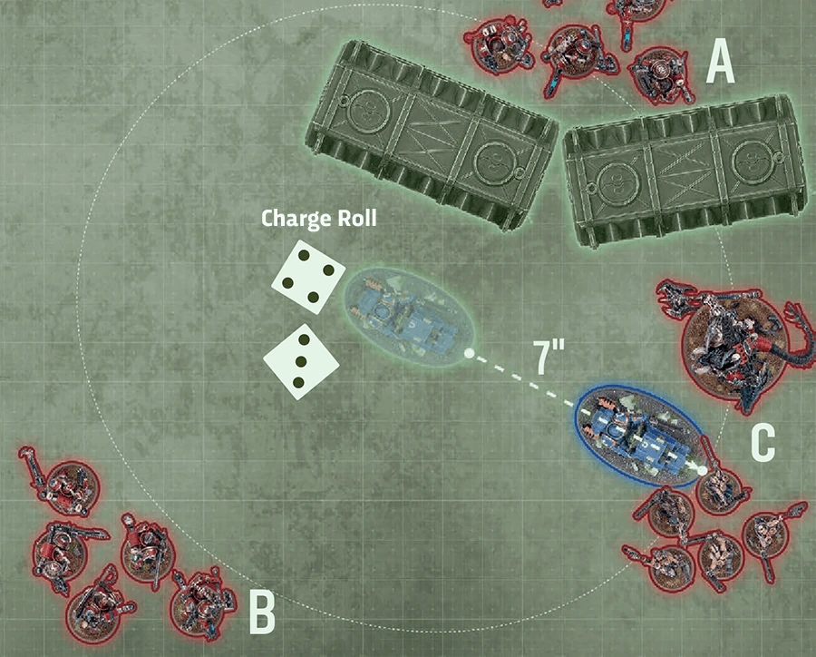

1. Start of Charge Phase
Official PDF · page 36Rules that are triggered at the start of the Charge phase are resolved now.
Selecting eligible units, selecting targets, Charge rolls and Charge moves.
Rules that are triggered at the start of the Charge phase are resolved now.
The resolves charges with their eligible units one at a time, using the sequence below, until all of their units they choose to charge with have declared a charge and those charges have been resolved.
A unit is eligible to declare a charge if it is on the battlefield, unless otherwise stated. Here are some rules that prevent a unit from being eligible to declare a charge:

Note that in the absence of to the charge roll, a result of 2 (a double 1) is never sufficient for a unit to complete a , as a unit cannot be within (2") when it attempts a charge. Such a roll would therefore result in a failed charge, and the unit would not move.
Rules that are triggered at the end of the Charge phase are resolved now.
Charge roll.
Your unit declared a charge this phase.
Your unit moves as described in .
Select one or more enemy units that are within 12" of your unit and within the maximum distance of your unit; until the end of this move, each of those enemy units is a charge target.